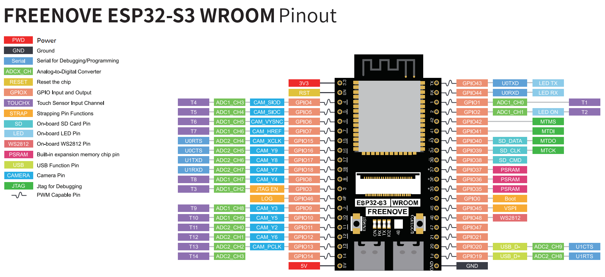

ESP32-S3 board
The metal can holds an entire computer; the rest of the board feeds it.
TinySkiff ESP32-S3 Lab · Day 1 of 30
The board in your hand is not a gadget with a chip in it — it is a complete computer the size of a stamp, and by the end of the course you will have written the only program it runs. Twenty minutes today to understand what it is and how it's laid out turns the next 29 days from copying steps into knowing why they work.
TSK-DAY01-UNBOX
Hand this to an agent so it can pull the lesson packet and coach you step by step.
01 First, know the pieces
Tip the kit out and find these three — they're the ones today is about. Tap Define on anything unfamiliar; the answer opens as a field note you can read and dismiss.
The metal can holds an entire computer; the rest of the board feeds it.

Fans the chip's pins out into labelled rows you can actually reach and wire.

The map from a physical pin to the number your code uses. You'll live in it.
02 One action at a time
A guided tour, not a checklist. Hold the board by the edges and find each thing in turn — you're learning the geography you'll navigate for a month.
Find the metal can in the middle. That shield covers the whole computer — processor, memory, and the flash chip that will hold your program.
Find the USB-C port along one edge. Power and code both arrive here, and the board will talk back to your screen through it.
Find the two small buttons near the port. One is RESET, one is BOOT — together they control whether the board runs your program or listens for a new one.
Find the small onboard LED near the chip. It's wired to one pin and needs no external parts, which is why you'll blink it on Day 3 before touching a single wire.
Look along both long edges and find the two rows of numbered pins. Each one is a GPIO — a wire your program can switch on, or read a signal from.
Open the pinout map and match a few printed numbers to the physical pins. That map is how "GPIO 13" in code becomes a specific pin you can touch.
03 Understand, don't memorise
Before any code, the single idea that makes the ESP32-S3 click. Your laptop runs an operating system that starts and stops many apps. This chip is a different kind of machine, and understanding how is worth more than any step-by-step you'll follow later.
Processor
It runs a single program from the instant it gets power. The sketch you upload IS its software.
Each numbered pin is a wire your code can drive high or low
Every pin speaks in 3.3V. Powering a part from 5V is fine; pushing 5V into a pin can damage it.
one chip + one program + pins at 3.3V = everything you'll build
It keeps the Wi-Fi and Bluetooth radio inside clean and stops it leaking interference into the rest of the board.
USB gives 5V; the chip needs 3.3V. A regulator on the board steps it down — which is exactly why the pins are 3.3V devices.
04 Make the idea yours
The pinout is the one reference you'll reopen every wiring day. Spending five minutes finding your way around it now makes every later circuit faster to follow — and shows you why the 3.3V rule matters before you can break it.
On the pinout, find the 3.3V pin, the 5V pin, and a GND (ground) pin. Those three feed power to everything you'll wire. Notice 3.3V and 5V are separate — that difference is the whole safety story.
Locate GPIO0 on the map — that's the BOOT pin the button pulls at power-up. Then find the pin the onboard LED sits on. Not every pin is interchangeable, and the map is how you tell.
05 Learn it with a hand on the tiller
Every lesson ships with a code and a machine-readable packet, so an agent can guide you with full context.
TSK-DAY01-UNBOX
How the agent should behave: teach the microcontroller mental model plainly, run the board tour part by part on request, and make sure the learner leaves understanding GPIO and the 3.3V rule — without turning safe handling into a lecture.